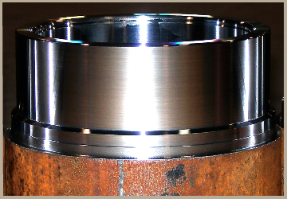
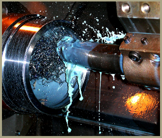

 Техно-Kорект ЕООД има дългогодишен опит в металообработването, изработването на инструментална екипировка и др. Фирмата се намира във Варна, но работи с клиенти от цялата страна. Специализираме в изработка на матрици, щанци и други видове инструментално оборудване. Приоритет номер едно за нас винаги са били нашите клиенти, които са фирми от различни браншове и индустрии в това число (БДЖ, пътностроителни фирми, заводи, хлебопекарни и др.)
 Фирмата се занимава с изработване на матрици, щанци и нестандартни детайли. Разполагаме с опитни работници и доставяме качествено и навреме всяка поръчка. Извършваме стругарски, шлосерски и фрезови услуги. Изработваме машини по поръчка, както и нестандартни детайли за вече съществуващи машини. Разполагаме с 25 тонна преса и имаме възможност да произвеждаме малки детайли сериино, като производството включва и изработка на щанците.